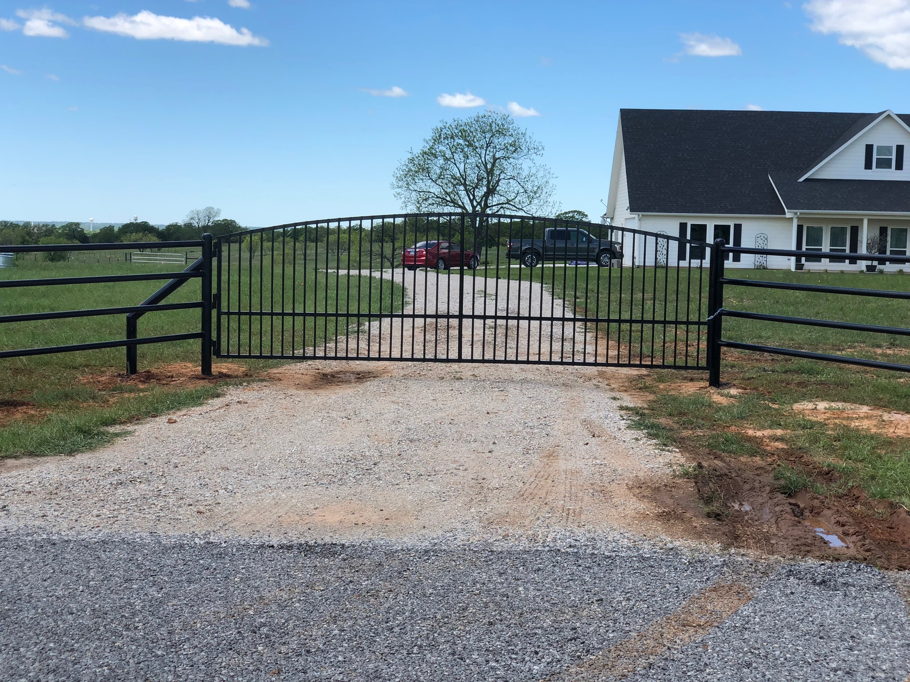
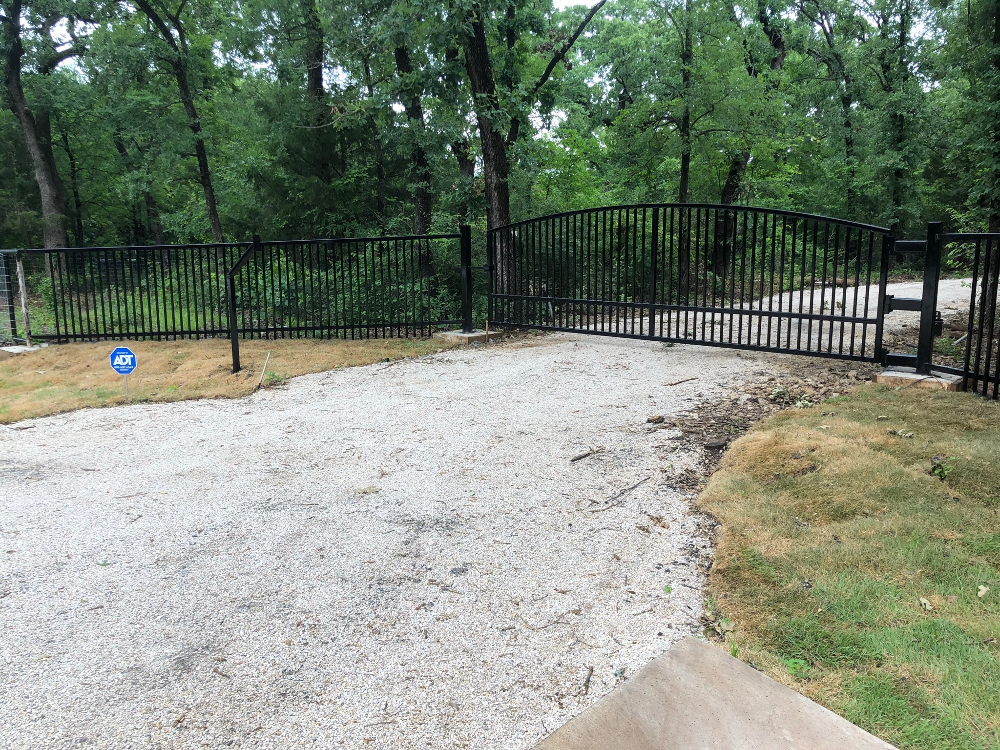
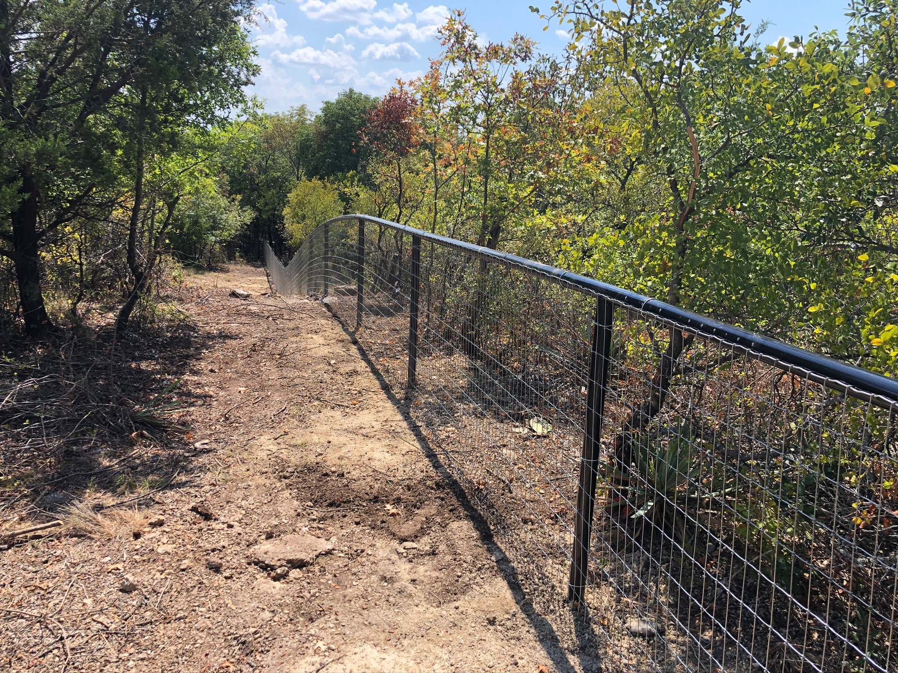
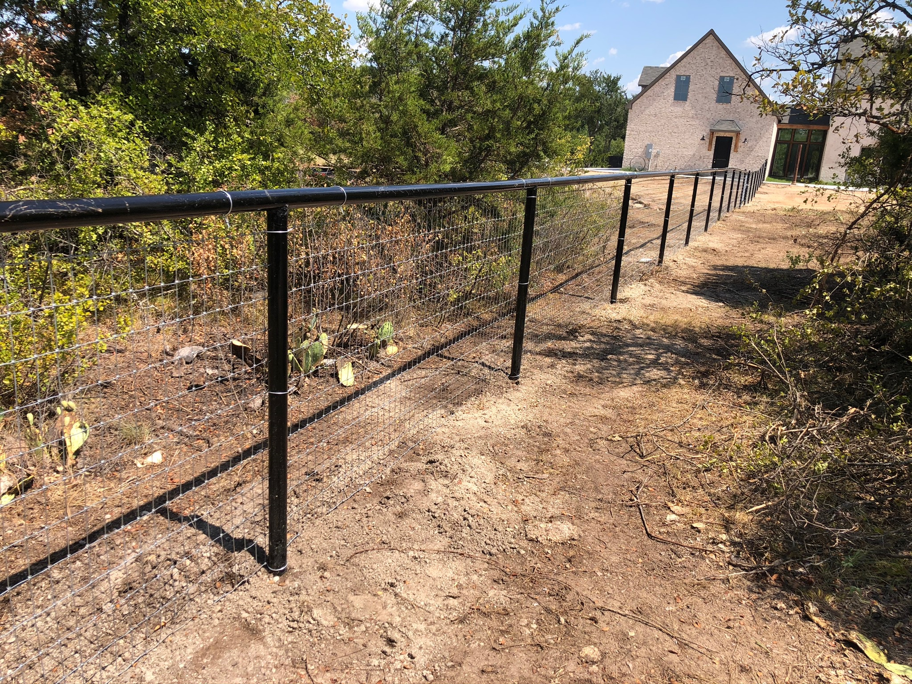

Pipe Fencing
Heavy-duty pipe fencing for acreage, road frontage, entrances, and long-lasting property lines.
Fence Contractor Whitesboro TX
Leatherneck Welding builds pipe fencing, ranch fencing, custom gates, perimeter fencing, and fence repairs for Whitesboro landowners, homes, shops, and acreage properties.

Whitesboro properties often need fencing that can handle acreage, livestock, equipment access, long fence runs, and everyday North Texas weather.
Whether you need pipe fencing, ranch fencing, a custom entrance gate, perimeter fencing, or repairs to an existing fence line, Leatherneck Welding builds clean, practical fence systems with strength in mind.
We serve Whitesboro, Gainesville, Sherman, Collinsville, Valley View, Sanger, and surrounding North Texas communities.
We regularly review projects outside these areas.Heavy-duty pipe fencing for acreage, road frontage, entrances, and long-lasting property lines.
Practical fencing for livestock, pasture separation, working land, and rural properties.
Driveway gates, ranch gates, access gates, and entry gates built to match your fence line.
Durable fence lines for homes, shops, barns, commercial properties, and larger lots.
Repairs for damaged posts, sagging gates, broken braces, corners, and worn fence sections.
Gate reinforcements, braces, welded repairs, and upgrades for existing fence systems.
We focus on clean, durable fence work that fits the property. For acreage and ranch fencing, that means strong posts, straight lines, reliable gates, and fence systems built for real use.
Project photos will be added here as Whitesboro-area fence projects are completed.



Yes. Leatherneck Welding builds pipe fencing for acreage, entrances, ranches, perimeter fence lines, and rural properties in and around Whitesboro.
Yes. We build ranch fencing for livestock, land separation, pasture areas, entrances, and working properties.
Yes. We build driveway gates, ranch gates, access gates, and welded gate upgrades designed to match your fence line.
Yes. We serve surrounding North Texas communities and regularly review projects outside the listed service areas.
Send us your rough layout, photos, or project details and we’ll help you get started.